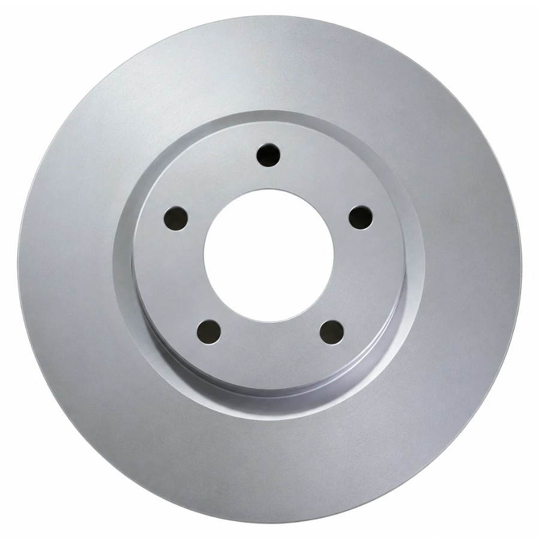
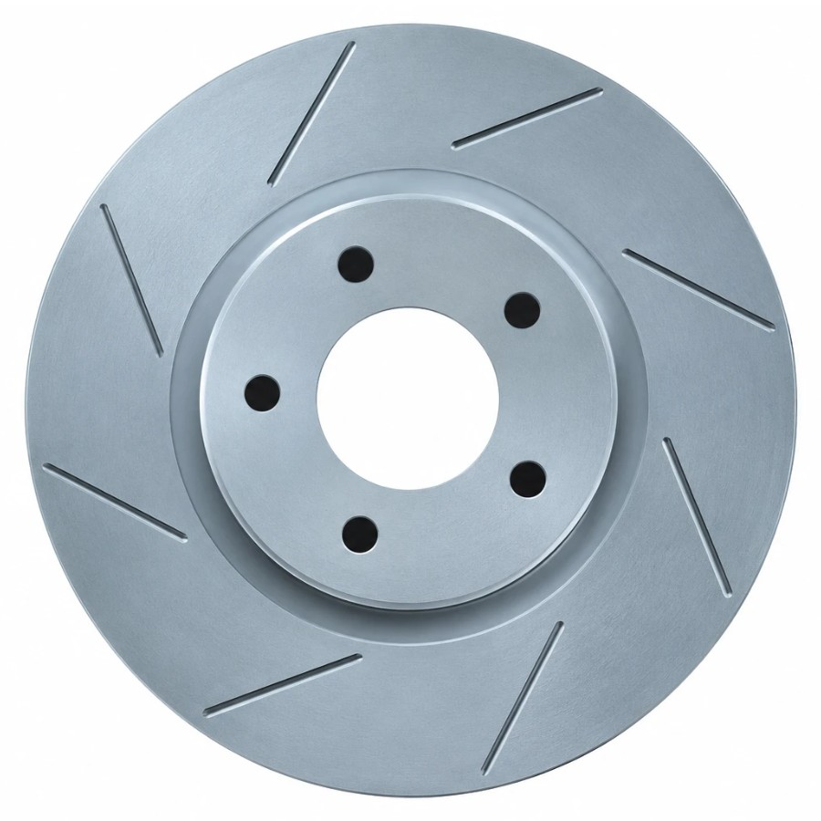
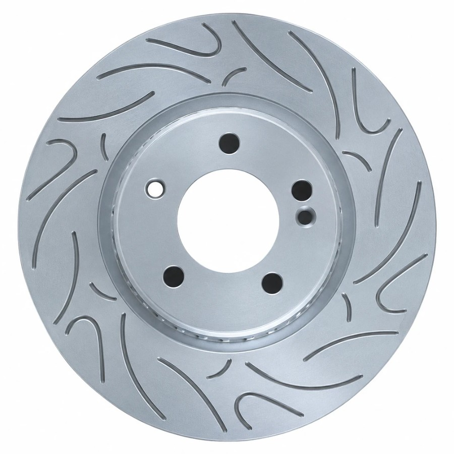
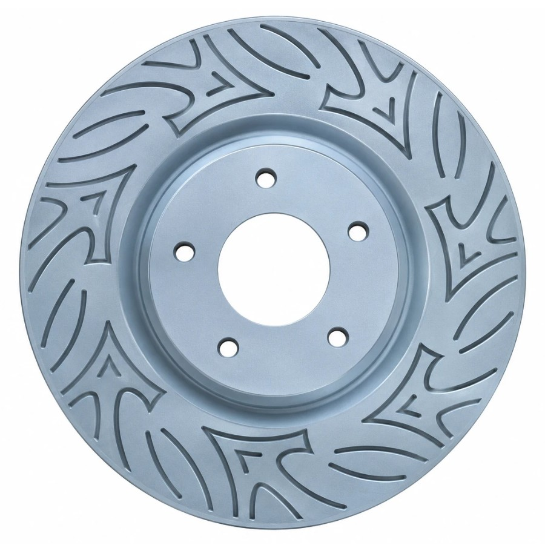
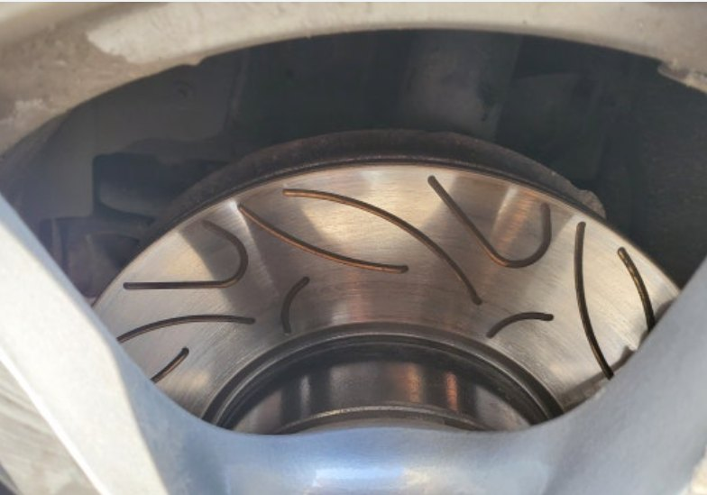

카오스 가공 타입




| 디스크 외경 (mm) | 300 이하 | 301~330 | 331~350 | 351 이상 |
|---|---|---|---|---|
| 사선 타입 | 66,000 | 77,000 | 88,000 | 99,000 |
| A 타입 | 88,000 | 99,000 | 110,000 | 121,000 |
| B 타입 | 110,000 | 121,000 | 132,000 | 143,000 |
휠 사이로 보이는 디스크가 달라집니다
- 정차해 있을 때 잘 보입니다
- 스포크가 얇은 휠과 잘 어울립니다
- 캘리퍼 도색과 같이 하면 더 눈에 띕니다



디스크는 표면 상태가 중요합니다
브레이크 떨림이나 소음의 주요 원인
- 두께 차이
- 두께가 0.015mm 정도만 달라도 제동할 때 떨림이 생길 수 있습니다.
- 마찰면 얼룩
- 패드 성분이 고르지 않게 붙으면 마찰력이 달라져 떨립니다.
- 표면 거칠기
- 너무 매끄러우면 길들이기가 안 되고, 너무 거칠면 소음이 커집니다.
- 열 변형
- 제동열로 디스크가 휘면 떨립니다. 조용한 전기차에서 더 잘 느껴집니다.
주문부터 출고까지
- 차량 확인차대번호와 순정 품번으로 맞는 디스크와 규격을 확인합니다.
- 상담원하는 패턴과 사용 환경, 요청 사항을 듣고 의뢰서를 씁니다.
- 가공디스크 규격에 맞춰 패턴을 새깁니다.
- 검사치수와 외관을 확인합니다.
- 출고정비업체나 고객에게 택배로 보냅니다.